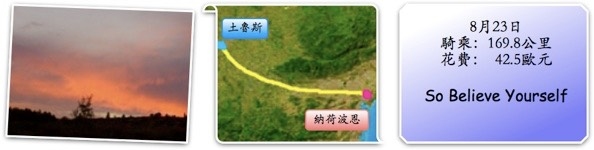
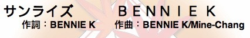

『叩叩叩∼你醒了嗎？』，於是八點半起床。
窗外那陰沈的雨雲飄散著濃郁的溼氣，隨時都會下起雨的象徵。
吃完早餐後，已經開始嘩啦啦的下起了雨，可以一口氣下半年都不會停的感覺。
如同毀壞百年孤寂裡那座村莊的雨一般，雨不斷的落下。
天氣沒有轉好的可能，旅行也沒有出發的打算，就這麼耗著吧。
可能是因為過度使用的緣故，頭巾的頂端破了一個洞，現在包起頭巾，就會跑出一撮毛。
『這是什麼？』帶著華麗的焦糖巧克力，中午時分出門，雨也稍微休息了一下，它大概也下累了吧。
午餐在土魯斯悠閒的吃完，法國麵包+義大利餅。
薯條、番茄、飯、牛肉、蔬菜，豐盛的一大盤。
甜點是草莓塔，女生應該不太能抵抗這樣的食物吧，而且還是法國版的。
八天後，重返土魯斯，不再有往東還是往西的困擾，庇里牛斯山已經爬過了，往東走吧。
離開土魯斯的最後一個景色，大約是下午三點才開始騎車，要往卡卡松尼騎，可能有點勉強。
反正騎到哪裡算哪裡，也不一定真的要到個定點才算有個交代。
下午三點四十分，看到往卡卡松尼的牌子，還有93公里。
保守的算法是，一小時騎15公里，93公里大約要騎六小時。
三點四十分+六小時，如果可以在晚上九點前到卡卡松尼的話，就算很厲害了。
沿著N113走，雖然沒有刻意的不拍照片，但今天的照片真是少了可憐，每張都放上來也撐不了多少版面。
剛剛是不是說晚上九點前到，就算很厲害了？
實際上是在下午六點二十分就到了。花不到三小時騎了九十幾公里。
平均每小時移動超過30公里，有TGV 10%的真傳。
怎麼會這樣呢？也不覺得有特別趕路之類的呀......大概是掉進蟲洞了吧？（參閱星野之宣作品集）
看看碼表的里程數，卻很紮實的，一公里也沒有少騎，真是相當不可思議的有效率。

這城市就是很驚人的卡卡松尼，走馬看花了旅行的實體表現就在於，到過門口就表示到過了。
（滑鼠點下去可以看大張一點的照片）
一邊參觀城市一邊找旅館，有那種掛著HOTEL的牌子，看起來便宜到不行的旅館。
可能是便宜過頭了，連老闆都找不到人，櫃台長滿蜘蛛絲，若真的有營業的話，價錢一定很了不起。
卡卡松尼的旅館不便宜，怎麼問都是4開頭的價位，奢侈也不是這樣花法。
早上看到一輛轎車裡面有狗狗的頭，以為是衛生紙的可愛包裝，台灣很常見的大頭狗面紙盒。
結果那顆狗頭不但會轉還會吐舌頭喘氣，是一隻真的拉布拉多放在車裡裡面載著跑。
晚上又看到一隻放在超凌亂陽台（什麼亂七八糟的東西都有）的白色胖貓瓷器。
放在那邊動也不動，這次總是假的了吧？拿出相機時，貓的頭又轉了 = =
旅館問著問著就騎到了邊界處，抵達城市後的一小時，決定離開它。
下個地方，納荷波恩，距離卡卡松尼56公里，從晚上七點半開始騎，十一點以前可以到就很厲害了。
這大概是類似庇里牛斯山尾巴的東西。之後山就消失了。
雨停了真是件令人高興的事，但雲層還沒有散掉的打算。
前幾天那種萬里無雲的豔陽天，不曉得這些頑固的雲都躲到什麼地方去了？
一整天都很單純的在N113公路移動著，除了騎腳踏車跟聽音樂，也沒別的事可以做。

晚上將近九點，背後一片紫紅色，太陽下山了，南法的天黑來的比較早，九點就差不多是極限。
這時候大概還有28公里還沒騎完。
跟還沒騎到卡卡松尼時一樣，也不是一定要騎到納荷波恩為止，只要有便宜的旅館就隨意住下吧。
路上是有幾間，但價錢還是硬邦邦的40歐元，天色已黑，若不投靠，就是繼續騎。
之前在弗瓦，還是覺得很窩囊，太沒志氣，旅館貴還是照樣住，原則何在？
不管天是否黑，價錢不滿意，今天就一直騎下去，騎不動了就找個什麼地方隨便睡一晚上吧。
在這樣的能見度呀，只能仰賴前後方來車的大燈，偶爾照亮路面，不然就是依著模糊的白色交通線條走。
在閉上眼睛的情況，你能走幾步路？
在烏漆嘛黑的夜裡，我能騎幾公里？
而且還帶著墨鏡，黑上加黑，又回到在夢裡騎車的感覺，環島時，是邊騎邊罵，環法，聽聽歌也是不錯。
前面什麼都看不見的話，So Believe Yourself∼
吵一點的音樂是必需的

一不小心，兩個小時又騎了將近60公里，晚上九點二十分就到了新目的地。（剛剛好像說十一點前？）
回想一下，今天下午三點才開始騎車，卻騎了有一百七十公里，這樣只怕以後會睡的一天比一天晚。
新城市，不曉得為什麼旅館還是那麼貴，真的要讓我試試看睡街上的感受嗎？
巷子裡的小旅館，帶著金項鍊金手環勞力士抽煙斗的老闆雖然感覺有點市儈，
住宿費也只收現金不接受刷卡，但其實人還挺好的，房價更好，25歐元。
卸下行李，肚子有點餓，這附近還有沒有賣吃的？經指點，去河岸旁的快餐車買了簡易的餐點。
夾蛋捲三明治，3.5歐元。看起來不怎麼樣，卻出乎意料的美味。
吃飽洗完澡，打開電腦又闔起電腦。
今天的遊記有點難寫，睡吧∼說不定像鬼屋一樣的旅館，晚上會有小精靈幫我寫今天的遊記。